Motifs & Imagery
A graphic language layer the current brand has none of — reusable motifs separate from the logo, a defined photography direction, a genre/category color system, and a full brand motion & logo showcase with kinetic type demos.
New — no existing precedentGraphic motifs
Drawing on the brand essence rather than generic streaming-platform gradients — light and radiance (tied to faith imagery), woven pattern (tied to African textile traditions), bokeh and film grain (cinematic authority), constellation (community & diaspora network), and more. All twelve follow the same discipline: texture layer only, never dominant.
| Motif | Meaning | Usage rule |
|---|---|---|
| Radiance | Light breaking outward — tied directly to faith and hope themes already present in FaithStream's own copy ("Faith-Filled Stories") | Subtle background texture only, never full-opacity. Good for empty states, loading screens, donation pages. |
| Woven | References African textile and architectural pattern traditions — gives the brand a visual root distinct from any generic streaming competitor | Section dividers, card backgrounds at low opacity. Never behind body text. |
| Halftone | Quiet, modern texture for surfaces that need depth without pulling focus | Browse panel backgrounds, footer, empty states. |
| Bokeh | Out-of-focus light orbs — cinematic depth and warmth, echoing film production aesthetics | Hero section underlays, splash screens. Keep opacity low; never compete with the logo. |
| Diagonal Silk | Fine 45° repeating lines suggesting luxury fabric — cinematic, editorial | Marketing hero backgrounds, print collateral, campaign key art overlays. |
| Diamond Lattice | African-inspired geometric grid — rhombus forms echo kente and other pan-African textile traditions | Packaging, merchandise, and pattern fills on large surfaces. Pairs well with Woven. |
| Concentric Rings | Expanding ripple / sound wave — references both worship (sound, music) and reaching outward (broadcast) | Podcast covers, worship genre tiles, audio-player backgrounds. |
| Faith Grid | Thin-line grid with subtle cross intersections — a quiet, non-heavy reference to faith without being literal | Data-heavy screens (account, settings), dashboard panels, footer backgrounds. |
| Noise Grain | Film grain texture — grounds digital content in cinematic physicality | Key art overlays, video thumbnail borders, print-ready brand assets. |
| Chevron Wave | Repeating V-forms — movement and momentum, also echoes traditional kente weave chevron borders | Progress indicators, loading bars, banner overlays. Maximum 30% opacity. |
| Audio Wave | Horizontal undulating bands — immediately communicates sound, music, and worship without any icon needed | Worship genre, podcast, and live-stream UI panels. Animated version preferred where motion is supported. |
| Constellation | Small dots with implied connections — community, diaspora network, and the idea of a scattered people gathering around shared stories | About / community pages, onboarding screens, Give/Donate flow backgrounds. |
Iconography
Lucide — already loaded in the live productThe live FaithStream code already loads Lucide (unpkg.com/lucide) for every UI icon — search, bell, play, plus, thumbs-up, house, and the rest. Rather than introduce a second icon library, this formalizes Lucide as the system's one icon set and documents the actual usage rule already implicit in the code: 1.5–1.75px stroke weight, no fill except for play/action glyphs.
tv-2, music-4, and mic-2 as Lucide icon names in the nav drawer (Series, Worship, Podcasts). Current Lucide has renamed these — the correct names are tv-minimal, music, and mic. This means those three nav icons are likely rendering blank in the live app right now. Worth a one-line fix in the product code itself, independent of this brand system.Stroke weight rule
| Context | Size | Stroke | Fill |
|---|---|---|---|
| Nav / drawer icons | 18–20px | 1.5px | None — outline only |
| Card play buttons, modal actions | 14–15px | n/a | Filled (white or magenta circle background) |
| Browse panel genre icons | 18px | 2px | None, white stroke on gradient tile |
| Mobile tab bar | 22px | 1.75px | None — outline, color shifts to magenta when active |
Genre & category color coding
The live browse panel already color-codes genres with gradients (.bg-thumb.g1 through .g5) — but the five gradients currently span unrelated hue families (purple, blue, green, brown) with no documented system behind them. This formalizes that into one purple-only range, consistent with the color system on the Identity page.
Each genre gets a unique two-point gradient, but every stop comes from the purple range defined in the color system — no genre "escapes" into an unrelated hue the way the current blue/green/brown set does.
Photography & key art moodboard
A working moodboard — 10 thumbnail sets, each showing a landscape and portrait version side by side. Upload your images to assets/moodboard/. Naming: a.png + b.png = Set 01 · c.png + d.png = Set 02 · continuing through s.png + t.png = Set 10. The first file in each pair (a, c, e…) is the landscape, the second (b, d, f…) is the portrait. Images fill their card with object-fit: cover.
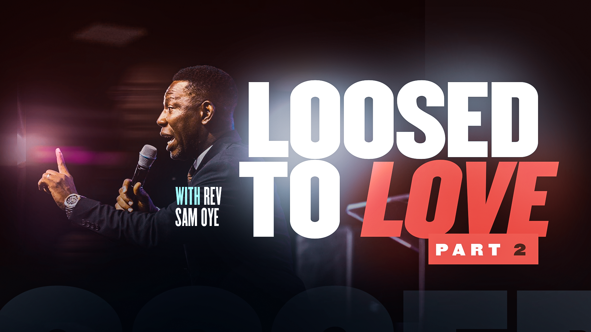
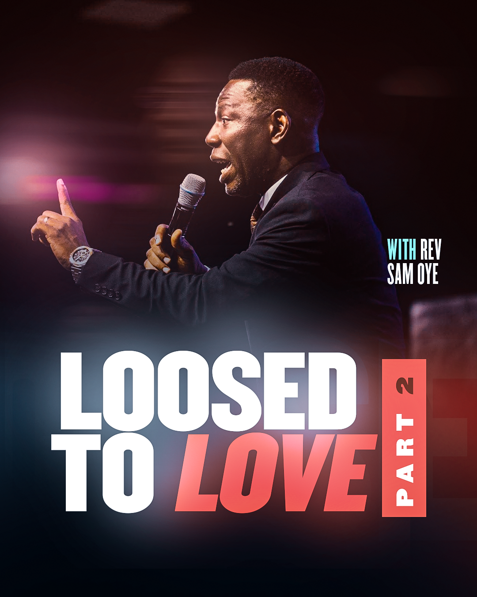

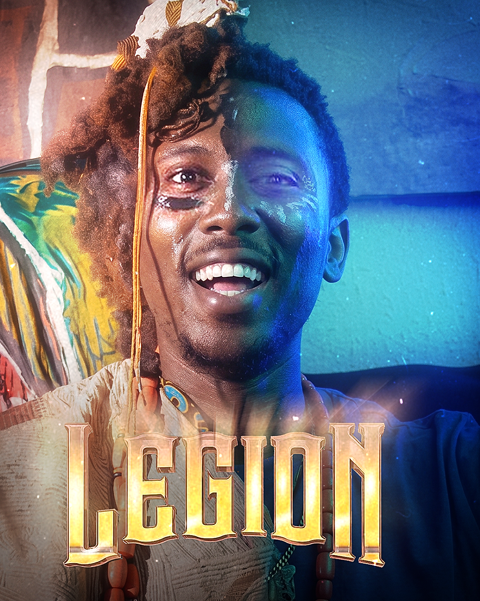
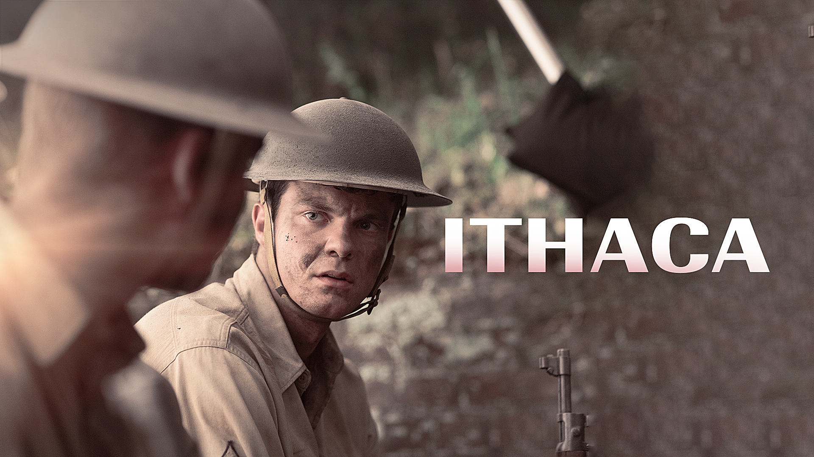
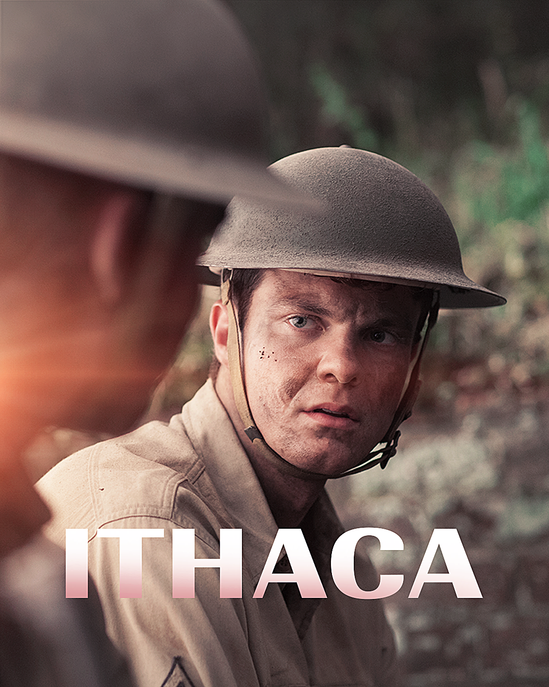
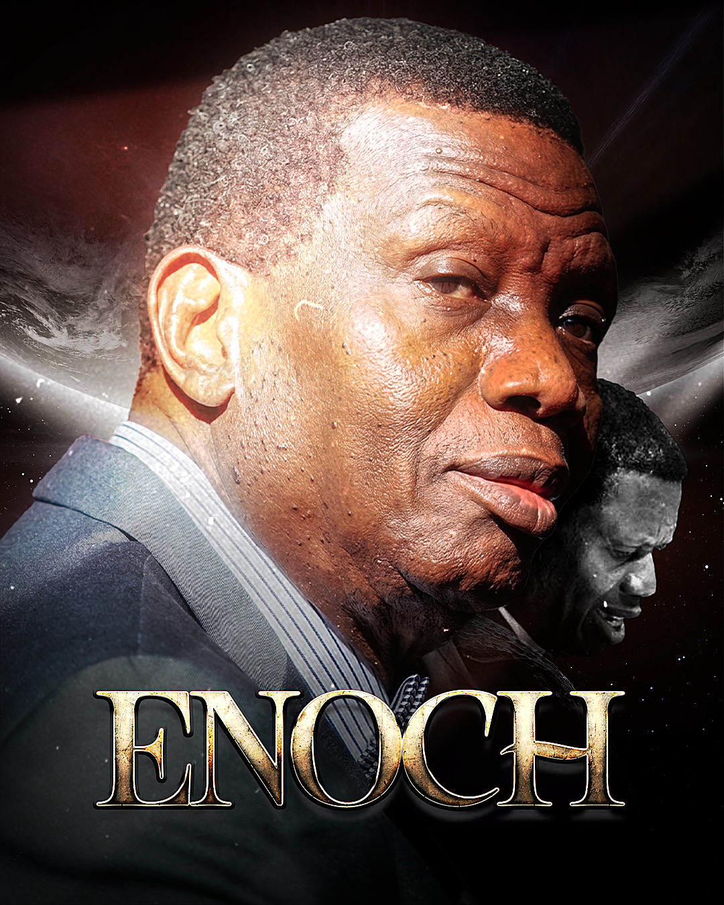


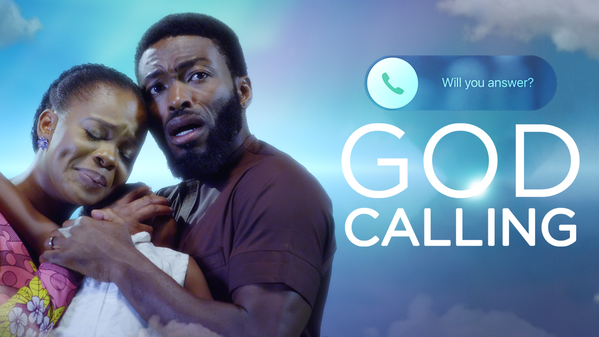
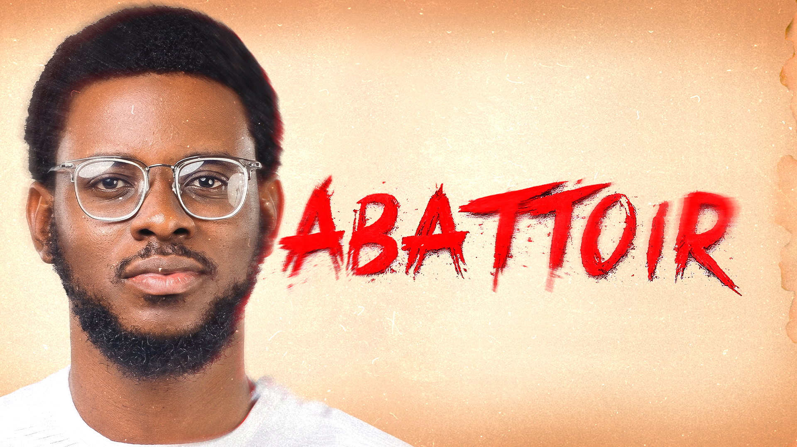
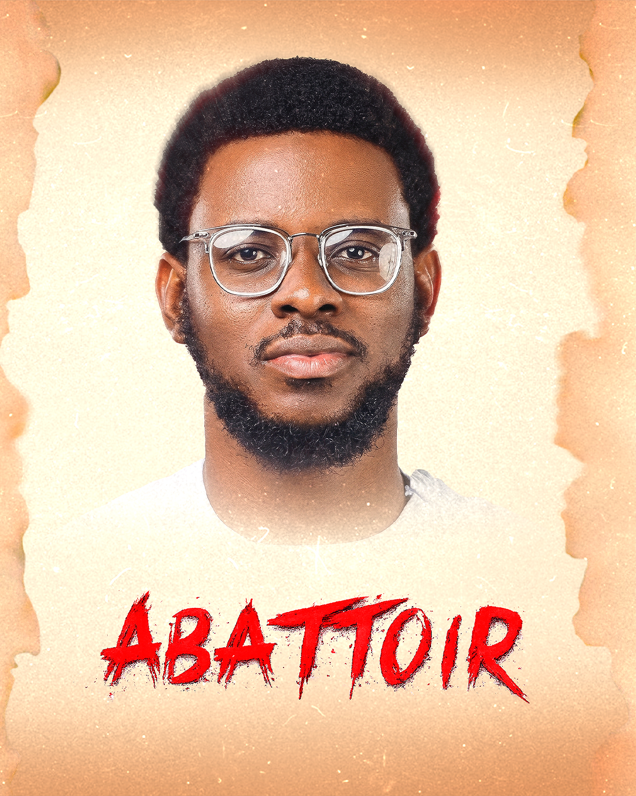

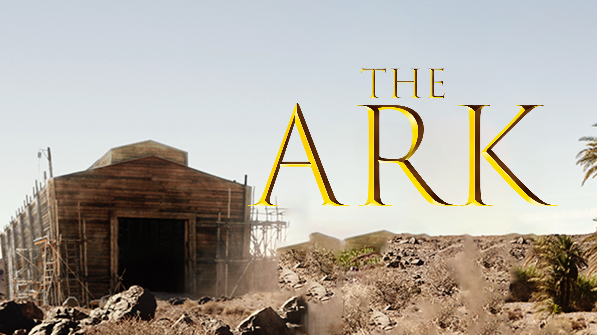
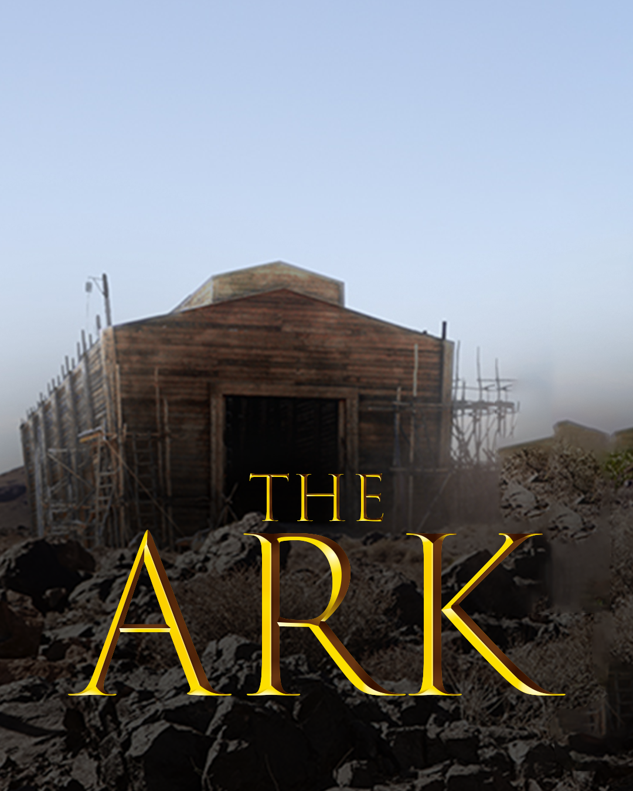

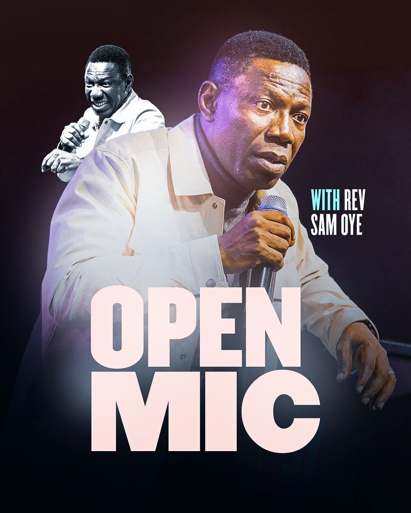
Create an assets/moodboard/ folder in the repo and upload 20 images named a.png through t.png. Each adjacent pair is one thumbnail set — the odd letter (a, c, e…) is the landscape, the even letter (b, d, f…) is the portrait. The card sizes are fixed by CSS aspect-ratio: landscape is 16:9, portrait is 4:5. Your image fills its card automatically regardless of the source file dimensions.
| Direction | Detail |
|---|---|
| Tone | Cinematic, warm, high-contrast — matching the "story-driven" language already present in FaithStream's positioning. Avoid flat, evenly-lit stock-photo lighting. |
| Subject matter | Community, worship, family, and purpose — themes already named in the existing guide, now backed by composition rules rather than left abstract. |
| Color grading | Imagery should grade toward the purple family in shadows and midtones where possible — a subtle, consistent treatment, not a heavy filter. |
| Representation | Reflect the diversity of the continental and diaspora audience — no single region or look should stand in for the whole brand across the content catalogue. |
Brand Motion & Logo Showcase
The FaithStream logo family — full lockup, icon mark, and wordmark — shown across six animated environments, from dark aurora to cinematic film grain. Use this section to align stakeholders on how the logo behaves across different product surfaces before committing to a motion video production run.
Logo on animated backgrounds
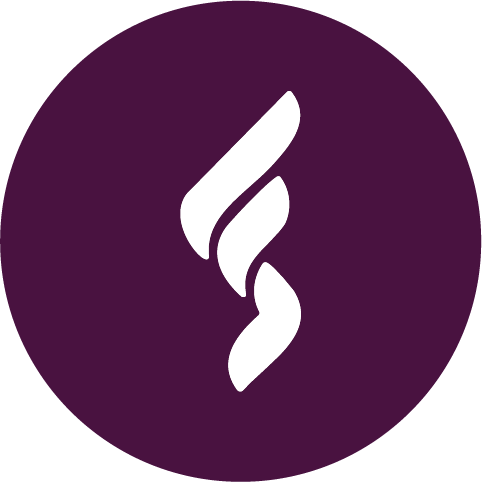
assets/logo/. If a file isn't showing, check the six filename variants: faithstream_full_purple.png, faithstream_full_white.png, faithstream_full_black.png, faithstream_icon_purple.png, faithstream_icon_white.png, faithstream_wordmark_white.png. The animated backgrounds are pure CSS — they work independently even before logo files are placed.Kinetic Type
Five text animation patterns for motion graphics, social content, and in-product moments. Each is a self-contained pure-CSS loop — copy the class into any production context without a JavaScript dependency.
Brand motion reel — video slot
Placeholder — drop your motion video inFor a hero loop, splash screen, or brand intro motion piece. Once you have a rendered file, drop it in /assets/motion/ and swap the placeholder block below for a <video> tag pointing at it.
assets/motion/faithstream_brand_loop.mp4Motion & transition language
The live product already has a considered motion system for component interactions — these are the actual timing/easing values in use, documented here so new components match instead of guessing.
| Interaction | Timing | Easing | Where it's used |
|---|---|---|---|
| Card hover lift | 0.28s | cubic-bezier(.4,0,.2,1) | card-land, card-port, card-cont |
| Hero slide transition | 0.65s | cubic-bezier(.4,0,.2,1) | hero-track |
| Nav drawer slide-in | 0.32s | cubic-bezier(.4,0,.2,1) | nav-drawer |
| Modal entrance | 0.3s | cubic-bezier(.22,1,.36,1) | modal-box (slight overshoot — more "premium" feel) |
| Hover preview popup | 380ms delay + 0.22s | ease | preview-popup (delay prevents accidental triggers while scanning) |
| Splash / fade-up entrance | 0.6s | cubic-bezier(.22,1,.36,1) | Brand moments: splash, donate CTA, onboarding step entry |
| Letter spacing bloom | 4s | ease-in-out | Brand name reveal loops in motion graphics |
| Aurora glow drift | 9–11s | ease-in-out | Background ambient motion — splash, hero, give screens |
cubic-bezier(.4,0,.2,1) (Material-style "standard" easing) is the default for anything functional — hovers, drawers, slides. Reserve cubic-bezier(.22,1,.36,1) (slight overshoot) for moments that should feel a little more special, like the full info modal opening — don't use it everywhere or it stops feeling special.